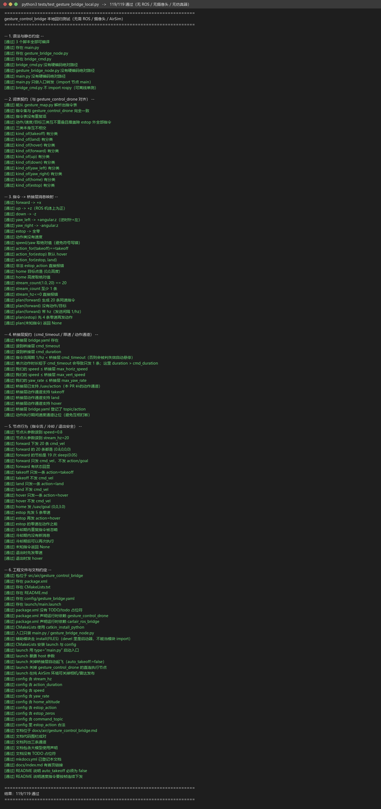

手势控制无人机（桥接层版）
用摄像头 + MediaPipe 识别手势，但执行层不再直连 AirSim，而是把指令翻译成
carlair_ros_bridge 的话题（/uav/action、/uav/cmd_vel、/uav/goal），由桥接层
统一限速、超时悬停并执行。
源码位于 src/air/gesture_control_bridge，
完整运行细节见模块 README.md；直连版见 gesture_control_drone。
1. 它解决什么问题
gesture_control_drone 已经证明"手势能飞"，但它是直连 AirSim 的：自己建连接、
自己限速、自己判超时。仓库里其它无人机模块（键盘、遥操作、导航）都统一走
carlair_ros_bridge，直连就带来三个问题：
- 安全逻辑两份：模块自己的
command_timeout与桥接层的cmd_timeout语义不同， 出问题时不知道哪一层生效； - 换仿真器要改模块：换 CarlaAir、多机
vehicle_name、换桥接层的限速策略，都得动手势代码； - 位姿话题两套：直连版发
/drone/odom，桥接层发/uav/odom，RViz/TF 里容易混乱。
本模块把"翻译"和"执行"分开：
gesture_control_drone（感知，不动）
/gesture_command ──► gesture_control_bridge（只翻译，不连仿真器）
├─ /uav/action takeoff | land | hover
├─ /uav/cmd_vel 机体系速度流（前/左/上 + 偏航角速度）
└─ /uav/goal home 的 ENU 目标点
│
carlair_ros_bridge（唯一连仿真器）
├─ control/* 限速限幅
├─ cmd_timeout 超时自动悬停
├─ /uav/odom + TF
└─ 多机 vehicle_name
换仿真器、改限速、上多机，都只动桥接层参数，本模块一行不改。
2. 指令 → 桥接层消息
| 手势指令 | 通道 | 消息 | 内容 |
|---|---|---|---|
takeoff / land / hover |
/uav/action |
std_msgs/String |
一条消息，桥接层在工作线程里执行 |
forward |
/uav/cmd_vel |
geometry_msgs/Twist |
linear.x = +speed（机体系前） |
up / down |
/uav/cmd_vel |
Twist |
linear.z = ±speed（机体系上/下） |
yaw_left / yaw_right |
/uav/cmd_vel |
Twist |
angular.z = ±yaw_rate（rad/s，逆时针为正） |
home |
/uav/goal |
geometry_msgs/Point |
(0, 0, home_altitude)，ENU 世界系 |
estop |
/uav/cmd_vel + /uav/action |
Twist×N + String |
先 estop_zeros 条零速刹停，再 hover（或 land） |
2.1 为什么一"次"手势要发 N 条速度指令
桥接层的两条安全语义决定了这件事：
| 桥接层参数 | 默认 | 含义 | 对本模块的约束 |
|---|---|---|---|
control/cmd_duration |
0.1 s | 单条速度指令的作用时长 | 只发一条 → 飞机只动 0.1 s |
rate/cmd_timeout |
0.5 s | 超过该时间没有新指令 → 自动悬停 | 发得太稀 → 中途被悬停打断 |
所以一次 1 s 的位移被拆成 action_duration × stream_hz = 1.0 × 20 = 20 条、
间隔 1/20 = 0.05 s 的指令流：每条覆盖 0.1 s、下一条在 0.05 s 后接上，既不中断也不堆积。
tests/test_gesture_bridge_local.py 会直接读桥接层的 bridge.yaml 校验
1/stream_hz < cmd_timeout，防止以后有人把频率调低把功能调坏。
2.2 给桥接层补的动作通道
桥接层原本只有速度（/uav/cmd_vel）和目标点（/uav/goal）两个通道，"起飞"只能靠
control/auto_takeoff 启动即起飞，没有降落通道。本模块给它补了最小的
/uav/action（takeoff / land / hover）：
cmd_vel_sub.py新增cb_action+_action_worker，用独立线程调用SimClient.takeoff()/land()/hover()（同步调用会阻塞到动作完成，不能放订阅回调）；- 动作执行期间
action_active置位，速度通道让位（与原有的goal_active一致）， 避免"边降落边接受速度指令"； - 状态回报：
ACTION:takeoff→ACTION_DONE takeoff/ACTION_FAILED takeoff <err>； - 因此桥接层的
auto_takeoff在配合本模块时应设为false，由手势决定何时起飞。
3. 环境要求
| 位置 | 项目 | 版本 |
|---|---|---|
| 宿主 | 操作系统 | Windows 10/11 |
| 宿主 | 模拟器 | AirSim（Blocks）或 CarlaAir，RPC 41451 |
| 客户机 | 操作系统 | Ubuntu 20.04 |
| 客户机 | ROS | Noetic（ROS 1） |
| 客户机 | Python | 3.8 |
| 客户机 | 依赖 | python3-opencv python3-numpy python3-pil（apt）mediapipe(0.10.x) airsim（pip，见 gesture_control_drone/requirements.txt） |
摄像头必须接在跑 ROS 的那台机器上（虚拟机需透传 USB 摄像头；VMware 透传时建议
GESTURE_CAMERA_FOURCC=MJPG，见直连版文档 §9.3）。
4. 运行
# 1) 编译
cd ~/uav_ws && catkin_make && source devel/setup.bash
# 2) 宿主机启动 AirSim
# 3) 一条命令：桥接层 + 手势感知 + 本模块
roslaunch gesture_control_bridge main.launch host:=192.168.49.1
# 或分两个终端（推荐，桥接层日志单独看）：
roslaunch carlair_ros_bridge main.launch host:=192.168.49.1 \
auto_takeoff:=false publish_image:=false publish_lidar:=false
roslaunch gesture_control_bridge main.launch start_bridge:=false
预期日志：
[bridge] 已启动：订阅 /gesture_command -> /uav/cmd_vel / /uav/action / /uav/goal
[bridge] 指令通道：takeoff->/uav/action，land->/uav/action，…，forward->/uav/cmd_vel，…
[bridge] 速度 0.80 m/s，偏航 0.50 rad/s，单次时长 1.00 s，指令流 20 Hz（20 条/次），急停=hover
[bridge] takeoff OK action=takeoff
[bridge] forward OK cmd_vel×20 (0.80,0.00,0.00) yaw=0.00 rad/s
5. 话题接口
| 方向 | 话题 | 类型 | 说明 |
|---|---|---|---|
| 订阅 | /gesture_command |
std_msgs/String |
手势指令 token（由 gesture_control_drone 发布） |
| 订阅 | /uav/status |
std_msgs/String |
桥接层状态（READY/HOVER/VELOCITY/ACTION_DONE…） |
| 订阅 | /uav/odom |
nav_msgs/Odometry |
桥接层位姿（本模块只用于日志/观测） |
| 发布 | /uav/action |
std_msgs/String |
takeoff / land / hover |
| 发布 | /uav/cmd_vel |
geometry_msgs/Twist |
机体系速度流 |
| 发布 | /uav/goal |
geometry_msgs/Point |
home 目标点（ENU） |
| 发布 | /gesture_bridge/state |
std_msgs/String |
本模块的执行结果，便于排查 |
排查命令：
rostopic echo /gesture_command # 感知端有没有发指令
rostopic echo /gesture_bridge/state # 本模块翻译成了什么
rostopic echo /uav/status # 桥接层执行到哪一步
rostopic echo /uav/odom # 位姿有没有真的变
rostopic hz /uav/cmd_vel # 指令流是否按 20 Hz 发（一次动作约 1 s）
6. 参数
| 参数 | 默认 | 说明 |
|---|---|---|
command_topic |
/gesture_command |
订阅的手势指令话题 |
cmd_vel_topic / action_topic / goal_topic |
/uav/cmd_vel / /uav/action / /uav/goal |
三个输出通道 |
status_topic / odom_topic |
/uav/status / /uav/odom |
桥接层状态与位姿 |
speed |
0.8 | 机体系线速度 m/s（须 ≤ 桥接层 max_horiz_speed/max_vert_speed） |
yaw_rate |
0.5 | 偏航角速度 rad/s（须 ≤ 桥接层 max_yaw_rate） |
action_duration |
1.0 | 一次位移/偏航持续时长 s |
stream_hz |
20.0 | 速度指令流频率 Hz（1/hz 必须 < 桥接层 cmd_timeout） |
home_altitude |
3.0 | home 的 ENU 高度 m |
estop_action |
hover | 急停语义：hover（刹停后悬停）/ land（刹停后降落） |
estop_zeros |
5 | 急停先发几条零速 |
command_cooldown |
0.5 | 同一条指令的最小间隔 s |
限速/限幅不在本模块：改速度上限请改
carlair_ros_bridge/config/bridge.yaml的control/max_*；本模块只保证自己发出去的速度不超过它（离线回归里有这条断言）。
7. 自测
python3 tests/test_gesture_bridge_local.py
覆盖：脚本语法与静态约定、与 gesture_control_drone 的词表契约（逐项比对，防漂移）、
指令→Twist/Point/String 映射与符号、指令流条数与节拍、桥接层 cmd_timeout
兼容性、急停（零速 + 动作）、home 目标点、节点冷却/未知指令/退出安全、工程文件与文档约定。
8. 常见问题
| 现象 | 原因与处理 |
|---|---|
发的 takeoff 没反应，桥接层日志报 already moving |
桥接层 auto_takeoff 还是 true（它启动就起飞了）→ 用 auto_takeoff:=false |
| 飞机只动一下就停 | 指令流频率太低（stream_hz 被调小）导致被 cmd_timeout 判失效 → 保持 20 Hz |
rostopic hz /uav/cmd_vel 看不到数据 |
只在动作那一瞬间有（约 1 s / 20 条），动作结束就没有了，属正常 |
land 卡住十几秒 |
桥接层是同步 land()，降落实测 20 s 量级（AirSim 下降约 0.2 m/s 且带减速） |
| 桥接管相机/雷达节点报错退出 | 纯 AirSim Blocks 没有 front_rgb/lidar1 → publish_image:=false publish_lidar:=false |
9. 运行证据
9.1 离线回归（本机真实输出）

上图由 gesture_control_drone/tools/log_to_png.py 从真实终端输出渲染（不是系统截屏）：
python3 tests/test_gesture_bridge_local.py 2>&1 | tee /tmp/bridge_test.log
python3 src/air/gesture_control_drone/tools/log_to_png.py /tmp/bridge_test.log \
docs/img/air/gesture_control_bridge/local_test.png \
--title "python3 tests/test_gesture_bridge_local.py"
9.2 桥接层联调（真机）
roslaunch carlair_ros_bridge main.launch host:=<宿主IP> auto_takeoff:=false \
publish_image:=false publish_lidar:=false
roslaunch gesture_control_bridge main.launch start_bridge:=false
# 另一个终端：
rostopic pub -1 /gesture_command std_msgs/String "data: 'takeoff'"
rostopic pub -1 /gesture_command std_msgs/String "data: 'forward'"
rostopic pub -1 /gesture_command std_msgs/String "data: 'land'"
rostopic echo /uav/status # ACTION:takeoff -> VELOCITY -> ACTION:land -> HOVER
证据图（docs/img/air/gesture_control_bridge/）待真机跑通后按上面的命令生成。
10. 与直连版的关系
gesture_control_drone |
本模块 | |
|---|---|---|
| 连接仿真器 | 自己持有 MultirotorClient |
不持有，走桥接层 |
| 起飞/降落 | 自己 armDisarm/takeoffAsync/landAsync |
/uav/action |
| 位移 | moveByVelocityBodyFrameAsync |
/uav/cmd_vel 指令流 |
| 限速/超时保护 | 模块自己实现 | 桥接层 control/* + cmd_timeout |
| 位姿 | /drone/odom |
/uav/odom |
| 适用场景 | 手机上只有 AirSim Blocks、不想装 CarlaAir 栈 | 与仓库其它无人机模块统一栈、多机、需要统一安全策略 |
两个模块可以共存：直连版保留原有证据与文档，本模块作为"接入统一桥接层"的替代路径。
11. 大模型使用声明
本文档及配套模块代码在编写过程中使用了 AI 大模型辅助（需求分析、代码与文档起草）。 参数与话题接口以本模块的离线回归测试和桥接层源码为准；真机动作序列以现场日志为准。 作者对提交内容的正确性与完整性负全部责任。